The opportunity
Due to a partnership with a textbook publisher, Top Hat needed to support management of multi-section courses. These courses could include dozens of sections, different instructors, hundreds or even thousands of students, and different degrees of control across sections.
Supporting them properly would open approximately $3M in revenue, but the existing product was not designed for this level of coordination.
Understanding the users
Multi-section courses introduced many roles, including two that were new to Top Hat: Course Coordinators and Lab Coordinators. The PM and I interviewed people across each group to understand their responsibilities and where control needed to sit.
Defines the overall curriculum and content and may also teach sections themselves.
Teaches one or more sections and may have flexibility in how they teach their students.
Often teaches one or more sections but usually follows a more prescriptive course structure.
Manages lab sections and creates lab content that lines up with the affiliated course.
Secondary users included students, Support, onboarding reps, and account managers. Support was especially important because they were already doing most of the section setup and management on behalf of professors — often spending 3–4 hours setting up a large course.
Course Coordinator personas
Four recurring Course Coordinator types emerged from the research. We prioritized the Prescriptive Coordinator and the Customizer because their problems were both common and deep.
Hard to know whether instructors are delivering the course consistently.
Provide prescriptive course materials and reduce unwanted flexibility.
Existing books never match exactly how they want to teach.
Author or customize course content to fit their own approach.
Grading can vary between instructors.
More consistent and fair grading across sections.
Hard to know how instructors and sections are performing relative to one another.
Compare section performance and instructor behaviour.
There wasn't one kind of multi-section course
Interviews revealed several fundamentally different course structures. A solution designed only around one professor teaching repeated sections would fail as soon as coordination, tutorials, labs, or varied instructor autonomy entered the picture.
One professor, multiple sections
This was the simplest case. The course content stays essentially the same across sections, with differences mainly in enrolled students and dates.
Different instructors coordinated by a Course Coordinator
Here, a coordinator oversees the overall course while a mix of professors and TAs teach individual sections. Instructor independence can vary considerably: TAs may follow a strict regimen while professors have more flexibility.
Tutorial sections
Students attend the same lecture but split into smaller tutorial sections, often led by TAs and usually involving more hands-on work.
Labs
Lab-based courses often have a separate lab component with its own assignments and grades. Labs are divided into sections because of space constraints and need to stay coordinated with the lecture content.
The current Top Hat workarounds
Support described two ways large courses were being handled at the time. Neither worked well:
This preserved section separation, but every content change, setting, or update had to be repeated across each course.
This avoided duplicated setup, but Top Hat could no longer distinguish between sections. It also broke down for section-specific activities such as attendance.
The workflow was so time-consuming that Support, rather than the customer, handled much of the management work.
Key user goals we prioritized
From coordinator interviews, we narrowed the first version around four core goals. These became the criteria we used to judge solution concepts.
Ensure students receive a relatively uniform education regardless of which section or instructor they have.
Allow experienced instructors to adapt their section based on progress and teaching style when the coordinator permits it.
Make it realistic to oversee 20–30 instructors with different levels of teaching experience and monitor section progress.
Support approximately 1,500+ students across roughly 70 sections while keeping enrollment and grades accounted for.
Prioritizing the problems for V1
Across interviews, the same operational problems appeared repeatedly. For the MVP, we focused on the most important issues we could realistically solve first.
Uploading the same content separately for every section.
Repeating the same content changes across every section.
Re-entering course settings section by section.
No way to prevent TAs or section instructors from editing shared course content.
Dozens of separate section courses overwhelm the course list.
Sections are difficult for students and instructors to distinguish.
Instructors needed a Top Hat account before they could be added to a course.
Mapping the user journeys
After discovery, the rough product model became clearer: coordinators needed a central place to create shared course content and manage sections, while individual sections still needed enough independence for instructors to teach differently when allowed.
Before the course begins
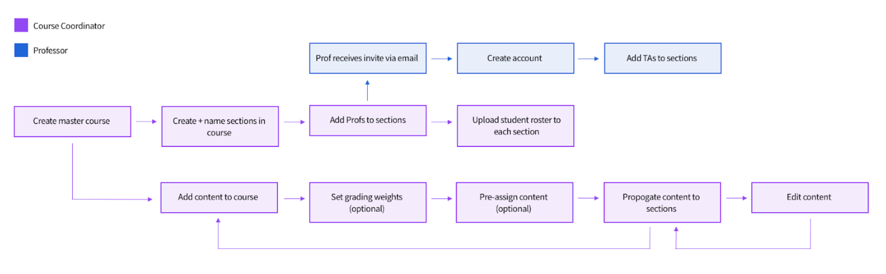
During the course
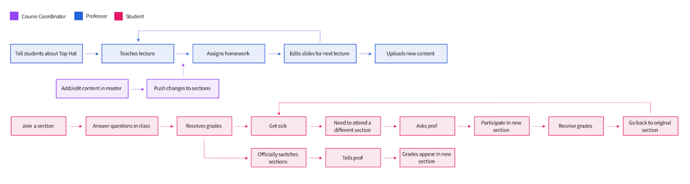
An iterative design process
I ran workshops with people across the company, led a cross-functional team to gather input, and created low-fidelity prototypes in Balsamiq. I tested those prototypes with internal employees and a diverse range of professors and coordinators, iterating until the usability issues we observed were resolved before moving into high fidelity.
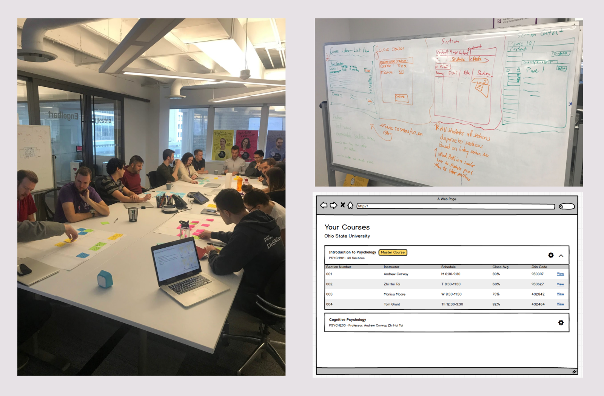
The solution: a master course
The core concept became a master course — the Multi-Section Manager — where the Course Coordinator creates shared content, creates sections, and assigns instructors.
When content is ready, the coordinator syncs it into the sections. Each section behaves similarly to an individual course, but receives its base content from the Manager. Depending on permissions, section instructors can add their own content without changing the shared base.
Creating a multi-section course
I extended the existing course-creation flow with a “This course has multiple sections” option. Coordinators can enter the number of sections and either name them manually or auto-number them — useful because many institutions already use patterns such as 001, 002, and 003.
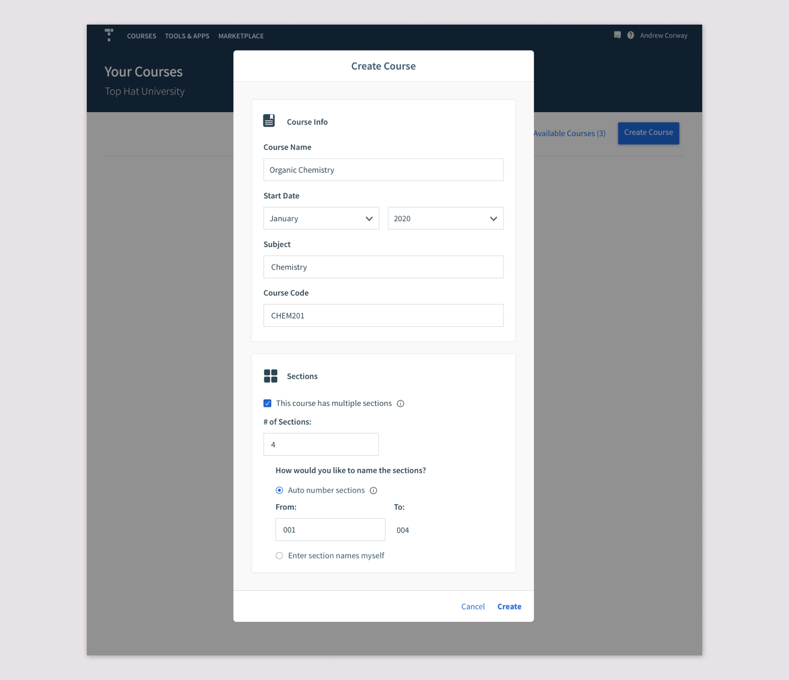
The Multi-Section Manager
After creation, coordinators land in the Multi-Section Manager. I kept it visually close to a regular Top Hat course to preserve familiarity, and used the empty state to provide lightweight in-product onboarding.
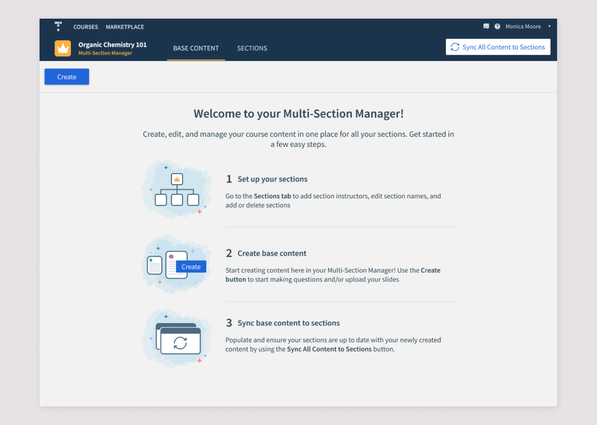
Shared base content + deliberate syncing
The Base Content tab is where the coordinator authors the shared course. Once the content is ready, they explicitly sync it to the sections.
We intentionally did not auto-sync every edit. Coordinators might not want sections updated before the content was finalized, and constant background changes would be confusing for section instructors.
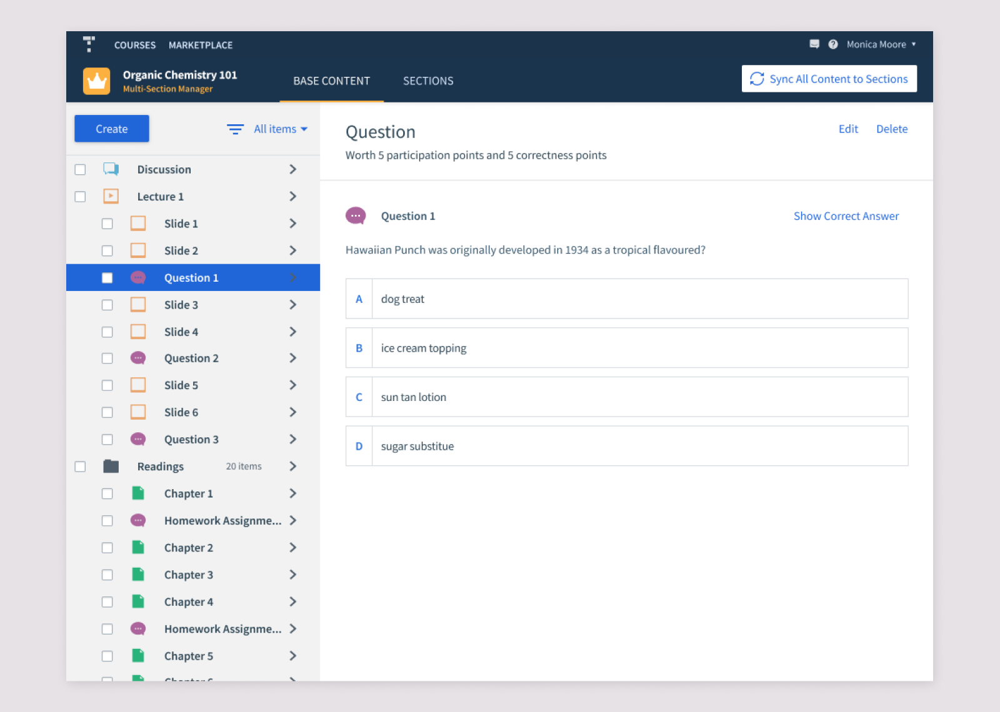
Managing sections
The Sections tab gives coordinators one place to manage every section: add or remove sections, assign instructors, see student counts, inspect class averages, and enter individual sections.
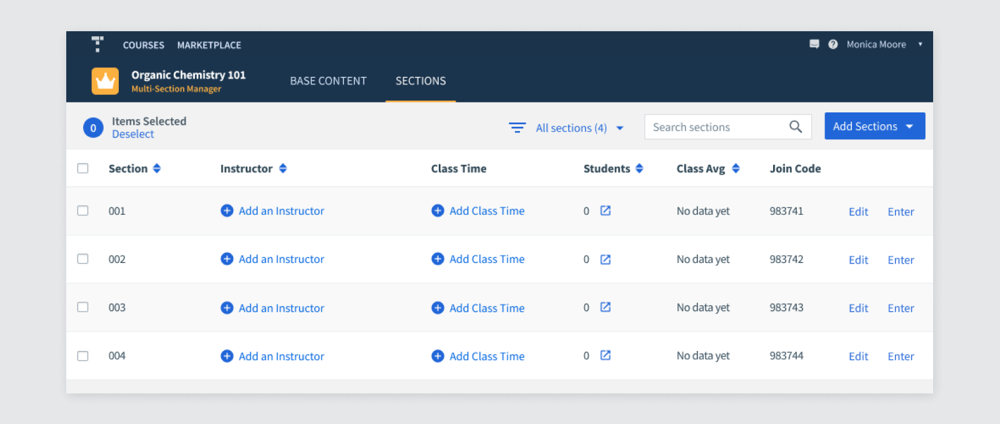
Section details and class times
Editing a section opens a modal where coordinators can add instructors by email. Instructors who do not yet have an account can be invited rather than blocking setup.
I also designed Class Times as a delighter. Research showed that instructors and students often referred to sections by their meeting time, so including this information made sections easier to identify and created a useful foundation for future features.
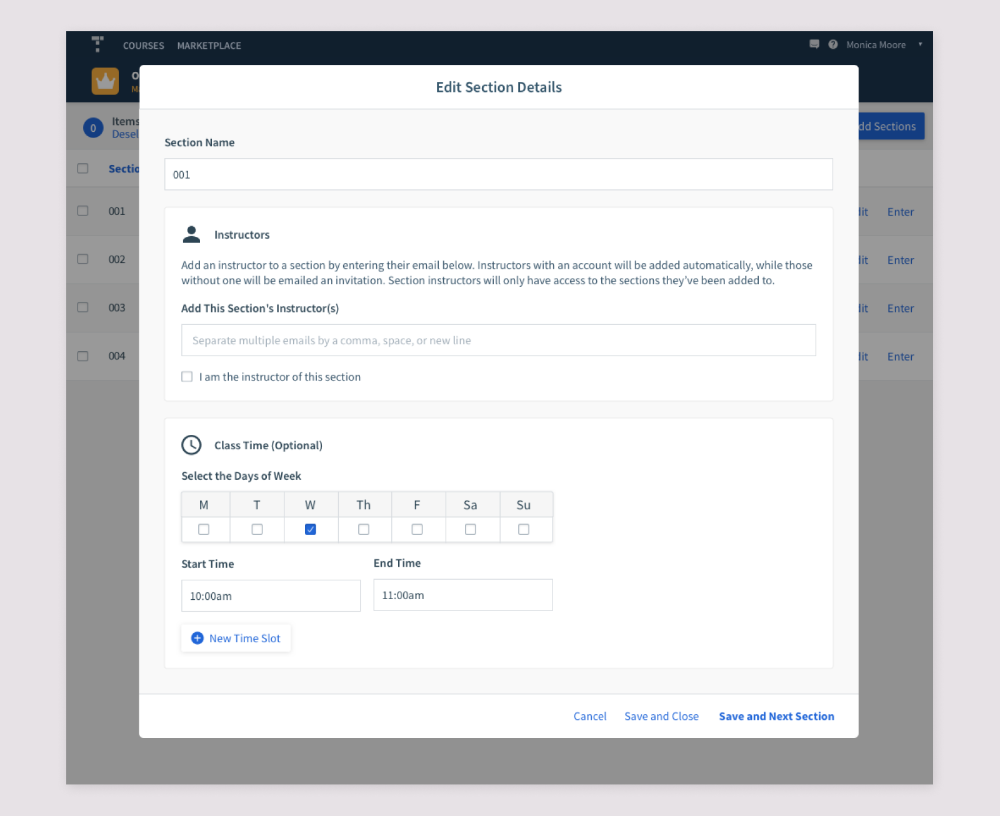
Once populated, the section table gives coordinators an at-a-glance view across the whole course.
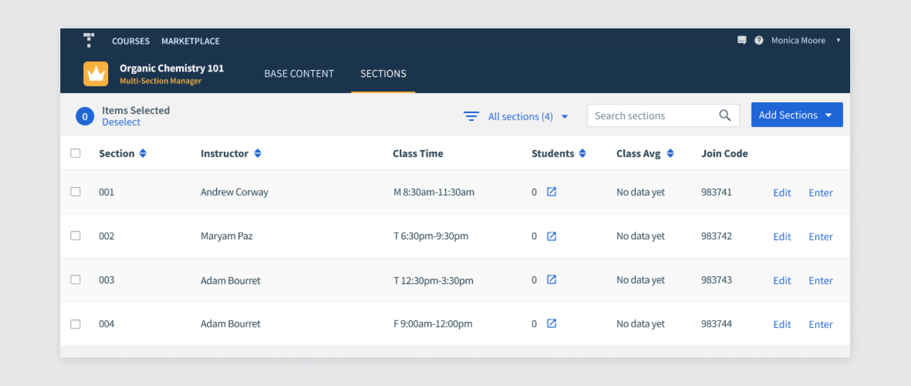
Redesigning the Course Lobby
One of the major pain points in the old workaround was a Course Lobby overwhelmed by dozens of individual section courses. The new collapsible course card groups the Manager and its sections together so coordinators can move between them without losing the relationship between the overall course and its sections.
Section instructors see a similar grouped structure, but only the sections they teach and without access to the Multi-Section Manager unless that access is granted.
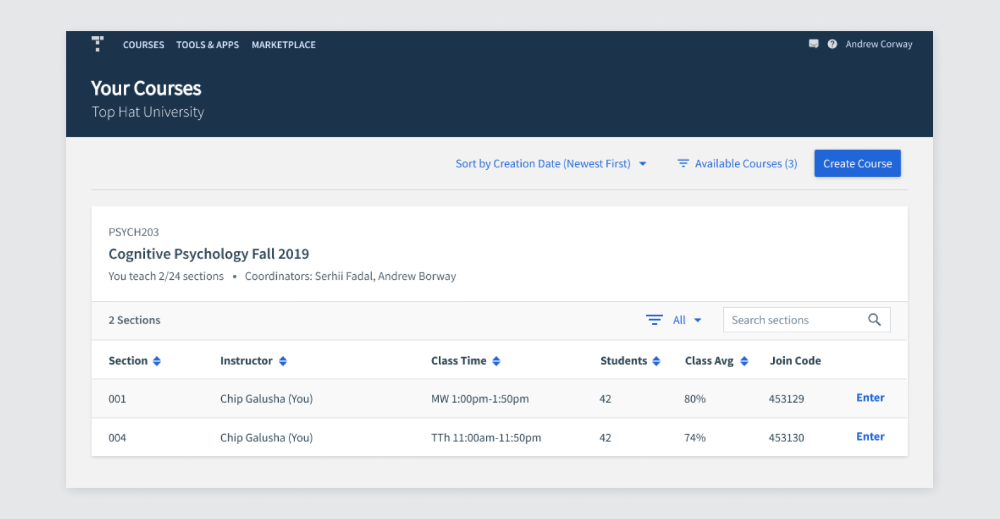
Inside an individual section
The common case was that section instructors could not edit the Base Content synced from the Manager, but could add their own material.
Shared Base Content is labelled with a crown so instructors can tell it apart from content created locally in their section. Edit and Delete controls are removed when permissions do not allow changes.
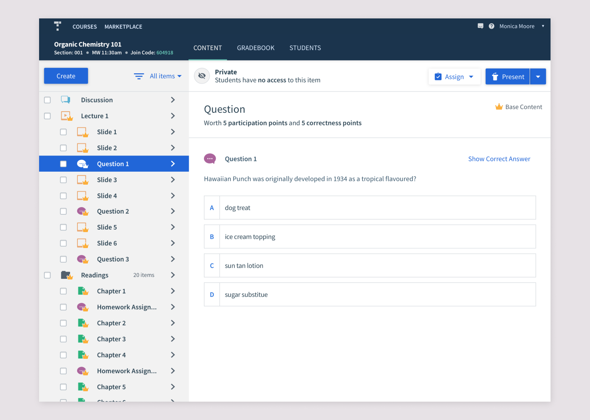